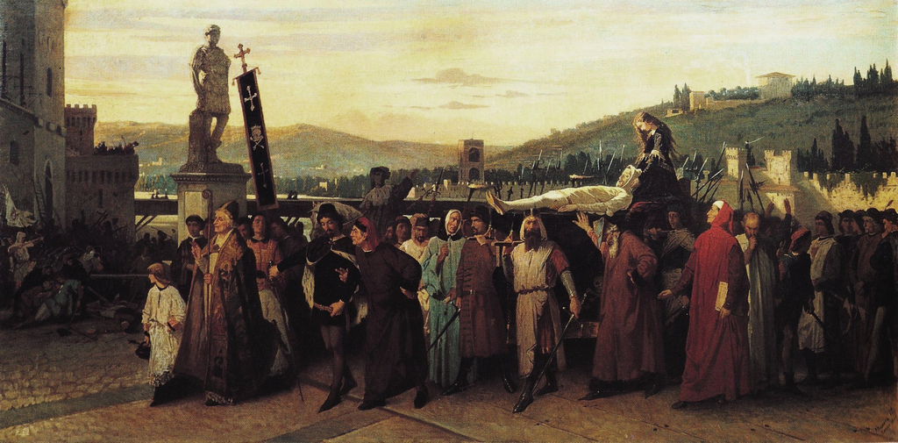

Il gruppo nacque nel 2023 da un incontro improssivo tra Fuschietti, Franzume e Dendenik, i quali, in maniera scherzosa, tirarono giù le basi per quella che diventerà la prima canzone del gruppo, "Smeni Duri".
A distanza di qualche mese, Fuschietti fece sentire la demo a Lachi, che, estasiato, decise di completare la canzone cantando il testo originariamente scritto da Franzume.
Infine, Lachi decise di coinvolgere Costa come batterista e fonico del gruppo.
Il 9 Febbraio 2024 uscì, quindi, il singolo di debutto degli Smeni Duri, l'omonima canzone "Smeni Duri", la quale ricevette un moderato successo locale.
Successivamente, con anche l'aggiunta di Cernia come bassista, il 27 Novembre 2024 il gruppo fece uscire la loro mistificata rendizione di "Curami" dei CCCP - Fedeli alla Linea.
L'ultima uscita del gruppo consiste nel singolo "Sacro Roiano Impero", fino ad ora l'uscita più attesa e più di successo degli Smeni Duri, ricevendo migliaia di interazioni su tutti i social e condivisioni da parte di pagine molto importanti, come (purtroppo) "TriesteCafe" e (per fortuna) "jotassassina_officialpage".
Il gruppo è attualmente al lavoro per un nuovo singolo.
Gli Smeni Duri durante la creazione di "Sacro Roiano Impero"

Foto dal primo concerto degli Smeni Duri a Piščanci